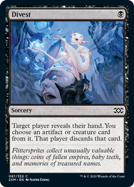

Divest
Alternative to Duress that changes a type of cards we can discard.

Drown in Sorrow
Simple board wipe that is conviniently -2/-2 so all of our own creatures can survive it.

Fangren Marauder
Massice life gain card and also a nice 5/5 body. While it does cost a large 6 mana, some matchups are auto win when this card is active.

Relic of Progenitus
Relic gives us even more graveyard hate besides our main deck Bojuka Bog which comes in hand dealing with decks that depend on their graveyards.

Troublemaker Ouphe
Nice and cheap artifact and enchantment removal that can save us in a pinch.